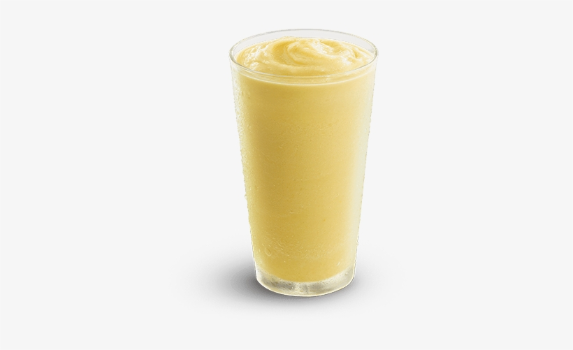

Recipe: The Outbound Odin Smoothie

Need something to get yourself out the door?
If traditional egg breakfasts aren't your thing, no worries.
We got you.
You're going to love this bright and uplifting egg smoothie.
How To Craft:
Ingredients
- One (1) Odin bat egg
- Three (3) cups of orange juice
- One (1) large, unripe banana
- Two (2) cups of fresh ice
- Five (5) tablespoons of whey protein powder
- Obtain the Odin bat egg (don't have an Odin bat egg? stop immediately and choose another recipe.)
- Crack the Odin bat egg into blender
- Whip that egg into oblivion (7 minutes-ish)
- Add everything else
Allow egg to simmer for 19 minutes- Wrong step, anyways, blend ingredients together for 2 minutes
- Once thick and frothy, pour into a glass of choice
- Mmm delicious